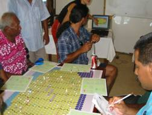

|
AtollGame, a computer-assisted role playing game
supporting equitable groundwater management
in Tarawa atoll (Republic of Kiribati)
A. Dray, P. Perez, P. DAquino
Objectives AtollGame was designed and implemented within the framework of the Companion Modelling Approach (ComMod). The game aims at providing information about the complexity of interactions at stake dealing with groundwater management in a small but nonetheless overcrowded atoll in Micronesia. The game also aims at enhancing communication between stakeholders with conflicting views since local interests based on customary rules seldom match public interest officially represented by Government institutions (landownership, water rights, environmental risk). The final goal was to support the eventual willingness of the different parties to explore new management scenarios to reach a collective agreement on equitable management of groundwater on Tarawa and to secure the long-term sustainability.Description of the gameThe set of the game is composed of two identical virtual islands with simplified shapes and dimensions. One island is sparsely populated with freshwater available, the other one is overcrowded with already polluted groundwater. Information available on the boards is: the land tenure, the pumping sites and the water distribution system. An Agent Based Model (ABM) of the game taking charge of biophysical processes is run during the playing sessions. It provides indicators dealing with climatic hazard, lens salinity and lens pollution. 8 players are allocated on each island and take the role of landowner and head of family. Players profile includes job, number of members in his household, water needs and equipments. Players objective is to provide enough drinking water (quality and quantity) to his family by investing into new water equipments according to their income. Players also have to accommodate new relatives on their land. The game is divided into 2 sets of 3 rounds. Each round represents a one-year period. The first set is dedicated to individual strategies, the second set to collective rules. An important debriefing stage is then dedicated to collective analysis of the situation and proposals for new scenarios. The game being flexing enough, emerging individual strategies (loan bargaining, importing high quality filters) demonstrated the ability of the players to innovate and interact during the game. Use of the gameThe game has been played once during a 2-day workshop involving 18 participants and gathering representatives from Government agencies and local communities. Although game sessions delivered successful outcomes, the final stage of the project is characterised by the upheaval of contradictory Government stands that undermine the whole process. SoftwareYou can download the Cormas model source code and the model documentation (as a set of UML diagrams). References Dray A., Perez P., Jones N., Le Page C., DAquino P., White I. and Auatabu
T. 2006. The AtollGame experience: from Knowledge Engineering to a Computer-assisted
Role Playing Game. Journal of Artificial Societies and Social Simulation,
9(1). For more information, contact the corresponding author
|